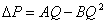
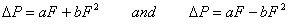
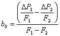
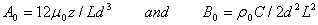
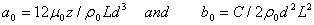

Baker、Sharples 和 Ward [Baker 1987] 表明渗透开口可以通过以下形式的二次关系更准确地建模
|
|
|
|
|
|
 |
(37) |
通过求解二次方程，可以将该形式用作气流单元 F (= rQ ）。出租 a = A/r and b = B/r2 允许方程（37）重写为
|
 |
(38) |
这些二次方程解为

|
(39) |
偏导数由下式给出

|
(40) |
方程（39）要求 b 为非零以防止被零除，方程 (40) 要求 a 为非零以防止除以零 F 变为零。有相反的意见认为幂律关系更好。
将系数 a 和 b 视为在一组特定条件下评估的简单常数是有用的（ m0, r0 and n0=m0/r0 ）乘以修正因子以考虑实际空气特性，就像幂律方程一样。那就是

|
(41) |
and

|
(42) |
请注意 r0/r = T/T0 以获得成分恒定的完美气体。
二次系数也可以根据测量的流量和压力数据计算。给定两点（ F1, DP1 ) 和 ( F2, DP2 ），值 a0 and b0 是：
|
 |
(43) |
and

|
(44) |
二次模型相对于幂律模型的主要优点是通过避免慢幂函数来实现计算速度。 （测试表明 pow(x) 比 sqrt(x) 慢四到八倍。此性能取决于硬件和软件。） 仍必须确定哪个模型是特定气流元件最准确的表示。例如，已经发现幂律模型对于平滑管道来说是更好的近似，而二次模型对于粗糙管道来说是更好的近似。然而，对于非常大的开口，导数 (40) 可能变得相当大，导致联立质量平衡方程收敛缓慢。
二次气流单元模型的系数 A 和 B 与开口的物理特性之间的理论关系已经建立[Baker 1987]。这些是
|
 |
(45) |
哪里
m
= 粘度，
r
= 密度，
z
= 沿流动方向的距离，
d
= 裂缝宽度，
L
= 裂纹长度，并且
C
= 1.5 + 流路中的弯头数。
对于方程 (38) 的质量流量形式，系数为
|
 |
(46) |